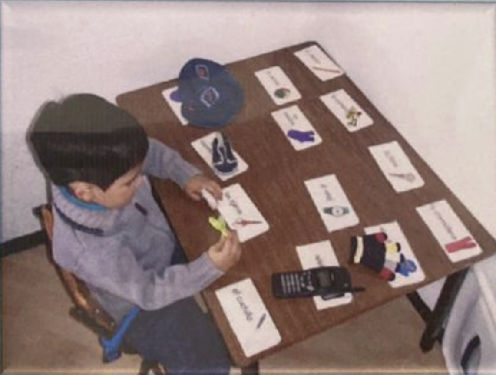
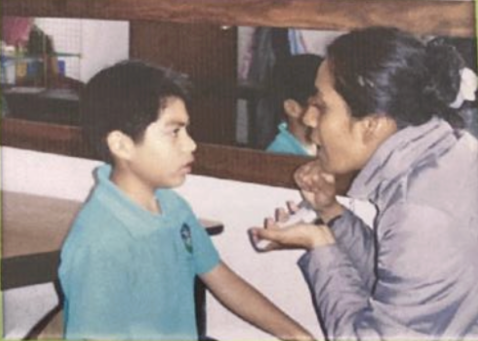
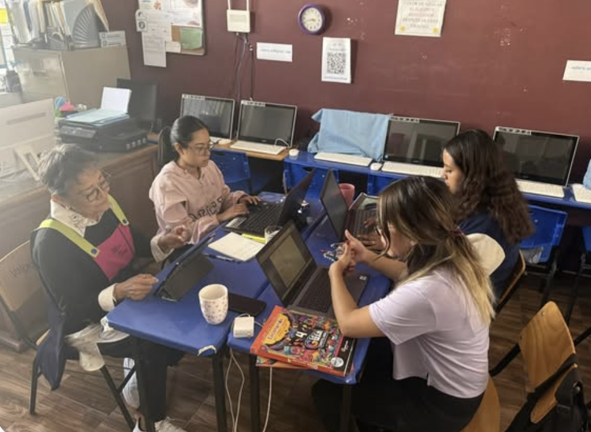
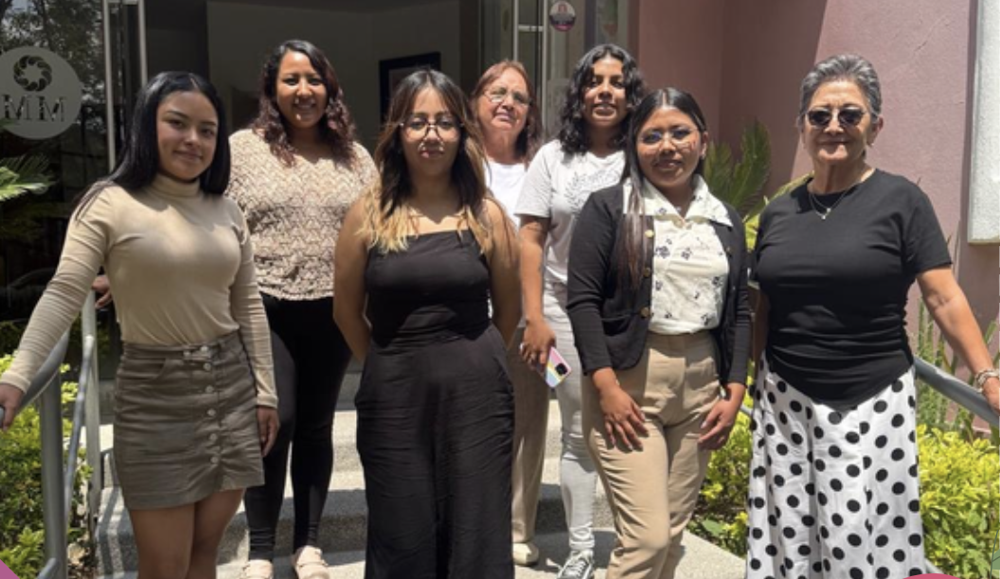

Es un centro especializado y de atención integral para NIÑOS, NIÑAS, JÓVENES y ADULTOS con Trastorno del Espectro Autista (TEA), cuyo principal objetivo es prestar diferentes servicios de calidad a PERSONAS con TEA, de acuerdo con un modelo inclusivo que no persigue fines lucrativos y que busca la mejora de su calidad de vida a través de una planificación centrada en ellas.
La plantilla estará integrada por psicólogos especializados en autismo, profesores de educación especial, sombras, que trabajarán de acuerdo con un modelo de atención-educación personalizada.

El desconocimiento de esta problemática por parte de padres, pediatras y quienes conforman el mundo infantil en los primeros años de vida del niño.
La escasa cantidad de especialistas que conocen las características que presenta el autismo como cuadro clínico. Falta de información de las diversas características de cómo se presenta el autismo y cómo afecta a cada niño, llevando a los “especialistas” a diagnosticar erróneamente. Diagnósticos errados que llevan a que los niños inicien terapias propias de otras patologías irreversibles que hacen que sus dificultades de comunicación se acrecienten.

Una pequeña parte de los niños Autistas tienen la “suerte” de llegar a un Especialista experimentado en esta problemática y habiendo llegado a tiempo a saber el diagnóstico, no encuentra alternativa “viable” para seguir el costoso tratamiento que implica.
Es por eso que contamos con un excelente personal de maestras que guian a estos niños a que tengan una mejor calidad de vida

